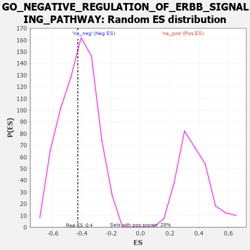

| | | Dataset | 7d |
| Phenotype | NoPhenotypeAvailable |
| Upregulated in class | na_neg |
| GeneSet | GO_NEGATIVE_REGULATION_OF_ERBB_SIGNALING_PATHWAY |
| Enrichment Score (ES) | -0.42930618 |
| Normalized Enrichment Score (NES) | -1.0090799 |
| Nominal p-value | 0.45288327 |
| FDR q-value | 0.8615521 |
| FWER p-Value | 1.0 |
Table: GSEA Results Summary
 Fig 1: Enrichment plot: GO_NEGATIVE_REGULATION_OF_ERBB_SIGNALING_PATHWAY
Fig 1: Enrichment plot: GO_NEGATIVE_REGULATION_OF_ERBB_SIGNALING_PATHWAY
Profile of the Running ES Score & Positions of GeneSet Members on the Rank Ordered List
| PROBE | GENE SYMBOL | GENE_TITLE | RANK IN GENE LIST | RANK METRIC SCORE | RUNNING ES | CORE ENRICHMENT | | 1 | NUP62 | | | 1871 | 0.324 | -0.1694 | No |
| 2 | VPS25 | | | 2033 | 0.300 | -0.1285 | No |
| 3 | ZGPAT | | | 2694 | 0.200 | -0.1709 | No |
| 4 | SOCS4 | | | 2953 | 0.157 | -0.1714 | No |
| 5 | HGS | | | 3476 | 0.080 | -0.2207 | No |
| 6 | CBL | | | 3621 | 0.056 | -0.2274 | No |
| 7 | CHMP6 | | | 3977 | -0.003 | -0.2713 | No |
| 8 | STAM2 | | | 4193 | -0.041 | -0.2901 | No |
| 9 | RAB7A | | | 5302 | -0.271 | -0.3743 | Yes |
| 10 | EPN1 | | | 5304 | -0.272 | -0.3191 | Yes |
| 11 | CBLB | | | 5445 | -0.306 | -0.2746 | Yes |
| 12 | MVP | | | 6223 | -0.543 | -0.2618 | Yes |
| 13 | CDC42 | | | 6236 | -0.548 | -0.1519 | Yes |
| 14 | EGFR | | | 6708 | -0.765 | -0.0556 | Yes |
| 15 | PTPRJ | | | 7180 | -1.054 | 0.0994 | Yes |
Table: GSEA details [plain text format]

Fig 2: GO_NEGATIVE_REGULATION_OF_ERBB_SIGNALING_PATHWAY: Random ES distribution
Gene set null distribution of ES for GO_NEGATIVE_REGULATION_OF_ERBB_SIGNALING_PATHWAY